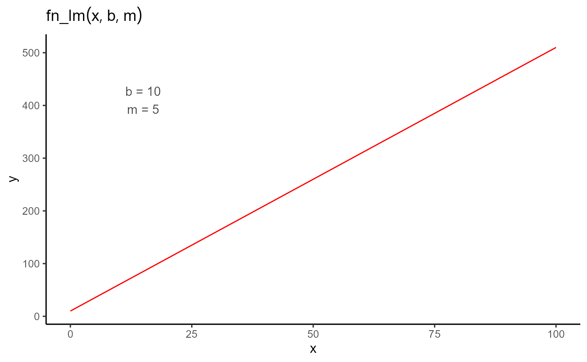

Getting started
The basic idea of this vignette is to illustrate to users how to use the exploreHTP package. We’ll start with a very basic example: a simple linear regression. Although this example is not the primary focus of the package, it will serve to demonstrate its use.
1. Simple linear regression
In this example, we’ll work with a small dataset consisting of 6 observations, where X is the independent variable and Y is the dependent variable.
dt <- data.frame(X = 1:6, Y = c(12, 16, 44, 50, 95, 100))
plot(dt$X, dt$Y)
First, we define an objective function. In this case, the function
fn_lm will represent the linear regression, where b is the
intercept and m is the slope of the regression.
fn_lm <- function(x, b, m) {
y <- b + m * x
return(y)
}The plot_fn function, which is integrated into the
package, allows us to plot any function with the parameters provided.
This is useful for visualizing the shape of the function before fitting
the model to the data.

To fit the model, we use the modeler_HTP function. In
this function, we pass x as the independent variable, y as the dependent
variable, and then a vector of parameters where we assign initial values
to our coefficient b and coefficient m.
mod <- dt |>
modeler_HTP(
x = X,
y = Y,
parameters = c(b = -5, m = 10),
fn = "fn_lm"
)
mod
#>
#> Call:
#> Y ~ fn_lm(x, b, m)
#>
#> Residuals:
#> Min. 1st Qu. Median Mean 3rd Qu. Max.
#> -12.5905 -6.0762 -0.3476 0.0000 6.1952 12.8952
#>
#> Optimization Results `head()`:
#> uid b m sse auc
#> 1 -15.5 19.5 449 258
#>
#> Metrics:
#> Ids Timing Convergence Iterations
#> 1 0.5373 secs 100% 259 (id)Once the model is fitted, we can examine the output, extract the estimated parameters, make some plots, and predict new x values.
plot(mod)In order to get the coefficients with their variance-covariance
matrix we make use of the coef and vcov
function, which only takes the model object as an argument.
coef(mod)
#> # A tibble: 2 × 6
#> uid coefficient solution std.error `t value` `Pr(>|t|)`
#> <dbl> <chr> <dbl> <dbl> <dbl> <dbl>
#> 1 1 b -15.5 9.86 -1.57 0.192
#> 2 1 m 19.5 2.53 7.71 0.00152
vcov(mod)
#> $`1`
#> b m
#> b 97.21937 -22.435238
#> m -22.43524 6.410068Finally, we can make predictions using the predict function, which takes the fitted model as an object and X as the value for which we want to make the prediction.
predict(mod, x = 4.5)
#> # A tibble: 1 × 4
#> uid x_new predicted.value std.error
#> <dbl> <dbl> <dbl> <dbl>
#> 1 1 4.5 72.3 5.01We can compare this with the lm function in R, which will give results similar to those obtained with our package.
Comparison with lm
mo <- lm(Y ~ X, data = dt)
mo
#>
#> Call:
#> lm(formula = Y ~ X, data = dt)
#>
#> Coefficients:
#> (Intercept) X
#> -15.47 19.51
summary(mo)$coefficients
#> Estimate Std. Error t value Pr(>|t|)
#> (Intercept) -15.46667 9.859988 -1.568629 0.191812151
#> X 19.51429 2.531811 7.707639 0.001524882
vcov(mo)
#> (Intercept) X
#> (Intercept) 97.21937 -22.435238
#> X -22.43524 6.410068
predict(mo, newdata = data.frame(X = 4.5), se.fit = TRUE)
#> $fit
#> 1
#> 72.34762
#>
#> $se.fit
#> [1] 5.010599
#>
#> $df
#> [1] 4
#>
#> $residual.scale
#> [1] 10.59133While the previous example was fairly simple, we can consider a more
complex scenario where we need to fit not just one function, but
hundreds of functions for several groups. This can be achieved using the
by argument in the modeler_HTP function.
Additionally, we can parallelize these processes by setting the
parallel argument to TRUE and defining the
number of cores to use.
It’s important to note that depending on the functions defined by the user, some parameters may need to be constrained, such as being required to be greater than or less than zero. In other cases, certain parameters might need to be fixed at known values. In these more complex situations, where we have many curves to fit and are working with complex functions—whether non linear regressions with specific parameter constraints or cases where some parameters are fixed for each group—modeler_HTP offers extensive flexibility.
2. Piece-wise regression
The following example, although still simple, represents a slightly
more complex function with a greater number of parameters. In this case,
we have a piece-wise regression, parameterized by t1,
t2, and k, and defined by the following
expression:
fun <- function(t, t1 = 45, t2 = 80, k = 0.9) {
if (t < t1) {
y <- 0
} else if (t >= t1 && t <= t2) {
y <- k / (t2 - t1) * (t - t1)
} else {
y <- k
}
return(y)
}We can plot the piecewise function and then fit the model using the
modeler_HTP function. After fitting the model, we can
examine the results, plot the fitted curve, extract the coefficients and
their associated p-values, obtain the variance-covariance matrix, and
make predictions for unknown values of x.

dt <- data.frame(
time = c(0, 29, 36, 42, 56, 76, 92, 100, 108),
variable = c(0, 0, 0.67, 15.11, 77.38, 99.81, 99.81, 99.81, 99.81)
)
plot(dt$time, dt$variable)
mod_1 <- dt |>
modeler_HTP(
x = time,
y = variable,
parameters = c(t1 = 45, t2 = 80, k = 90),
fn = "fun"
)
mod_1
#>
#> Call:
#> variable ~ fun(x, t1, t2, k)
#>
#> Residuals:
#> Min. 1st Qu. Median Mean 3rd Qu. Max.
#> 0.00000 0.00000 0.00000 0.07444 0.00000 0.67000
#>
#> Optimization Results `head()`:
#> uid t1 t2 k sse auc
#> 1 38.6 61 99.8 0.449 5807
#>
#> Metrics:
#> Ids Timing Convergence Iterations
#> 1 0.545 secs 100% 511 (id)
plot(mod_1)
# Coefficients
coef(mod_1)
#> # A tibble: 3 × 6
#> uid coefficient solution std.error `t value` `Pr(>|t|)`
#> <dbl> <chr> <dbl> <dbl> <dbl> <dbl>
#> 1 1 t1 38.6 0.0779 496. 4.54e-15
#> 2 1 t2 61.0 0.0918 665. 7.82e-16
#> 3 1 k 99.8 0.137 730. 4.47e-16
# Variance-Covariance Matrix
vcov(mod_1)
#> $`1`
#> t1 t2 k
#> t1 6.061705e-03 -0.002940001 1.877072e-07
#> t2 -2.940001e-03 0.008431400 4.204939e-03
#> k 1.877072e-07 0.004204939 1.870426e-02
# Making predictions
predict(mod_1, x = 45)
#> # A tibble: 1 × 4
#> uid x_new predicted.value std.error
#> <dbl> <dbl> <dbl> <dbl>
#> 1 1 45 28.5 0.223Finally, we illustrate how to provide different initial values to the function when dealing with multiple groups, and we also show how to fix some parameters of the objective function.
Providing Initial values
init <- data.frame(uid = 1, t1 = 20, t2 = 30, k = 0.8)
mod_2 <- dt |>
modeler_HTP(
x = time,
y = variable,
parameters = c(t1 = 45, t2 = 80, k = 90),
fn = "fun",
initial_vals = init
)
mod_2
#>
#> Call:
#> variable ~ fun(x, t1, t2, k)
#>
#> Residuals:
#> Min. 1st Qu. Median Mean 3rd Qu. Max.
#> 0.00000 0.00000 0.00000 0.07444 0.00000 0.67000
#>
#> Optimization Results `head()`:
#> uid t1 t2 k sse auc
#> 1 38.6 61 99.8 0.449 5807
#>
#> Metrics:
#> Ids Timing Convergence Iterations
#> 1 0.5506 secs 100% 567 (id)
coef(mod_2)
#> # A tibble: 3 × 6
#> uid coefficient solution std.error `t value` `Pr(>|t|)`
#> <dbl> <chr> <dbl> <dbl> <dbl> <dbl>
#> 1 1 t1 38.6 0.0779 496. 4.54e-15
#> 2 1 t2 61.0 0.0918 665. 7.82e-16
#> 3 1 k 99.8 0.137 730. 4.47e-16Fixing parameters
fix <- data.frame(uid = 1, k = 98)
mod_3 <- dt |>
modeler_HTP(
x = time,
y = variable,
parameters = c(t1 = 45, t2 = 80, k = 90),
fn = "fun",
fixed_params = fix
)
mod_3
#>
#> Call:
#> variable ~ fun(x, t1, t2, k)
#>
#> Residuals:
#> Min. 1st Qu. Median Mean 3rd Qu. Max.
#> 0.0000 0.0000 0.6700 0.8789 1.8100 1.8100
#>
#> Optimization Results `head()`:
#> uid t1 t2 sse k auc
#> 1 38.6 60.6 13.6 98 5721
#>
#> Metrics:
#> Ids Timing Convergence Iterations
#> 1 0.5039 secs 100% 321 (id)
coef(mod_3)
#> # A tibble: 2 × 6
#> uid coefficient solution std.error `t value` `Pr(>|t|)`
#> <dbl> <chr> <dbl> <dbl> <dbl> <dbl>
#> 1 1 t1 38.6 0.396 97.5 3.15e-12
#> 2 1 t2 60.6 0.429 141. 2.34e-13
plot(mod_3)
rbind(metrics_HTP(mod_1), metrics_HTP(mod_2), metrics_HTP(mod_3))
#> # A tibble: 3 × 8
#> uid var SSE MAE MSE RMSE r_squared n
#> <dbl> <chr> <dbl> <dbl> <dbl> <dbl> <dbl> <int>
#> 1 1 variable 0.449 0.0744 0.0499 0.223 1.00 9
#> 2 1 variable 0.449 0.0744 0.0499 0.223 1.00 9
#> 3 1 variable 13.6 0.879 1.51 1.23 0.999 9This vignette provided a basic introduction to using the exploreHTP package, starting with simple examples such as linear regression and piecewise regression. The goal was to demonstrate the fundamental features and flexibility of the package. However, more complex situations can arise when working with high-throughput phenotypic (HTP) data, which involve multiple groups, parameter constraints, and advanced modeling scenarios. These more complex situations are illustrated in the other vignettes, which use real HTP data to showcase the full capabilities of the exploreHTP package.